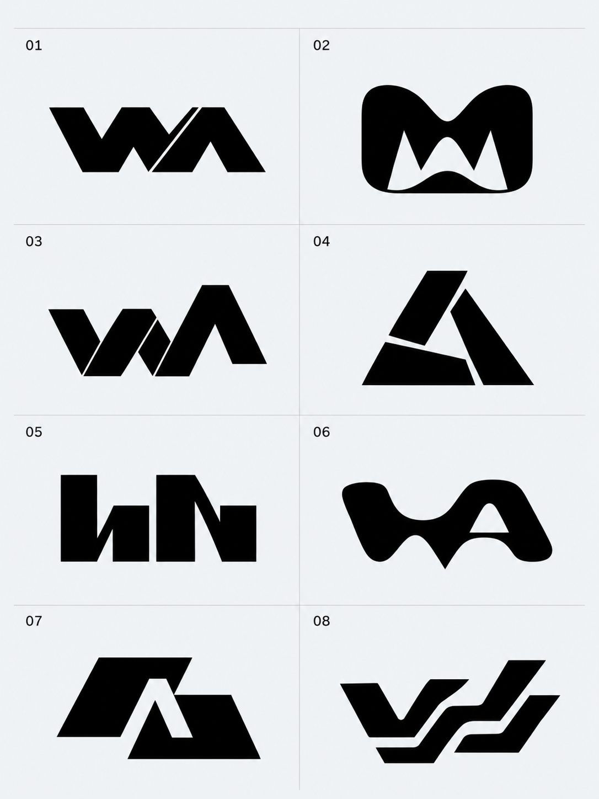

ЗНАК / ИССЛЕДОВАНИЯ
Поиск
характера.
Три направления и восемь новых эскизов.
От точной геометрии до живой пластики.
Разрез
ТОЧНОСТЬ / ХАРАКТЕРУзнаваемая основа.
Более острое высказывание.
Скобки и «А» собраны в широкую монограмму. Один диагональный разрез превращает знак в объект исследования. При касании части расходятся и снова точно совмещаются.

КУДА ПОДХОДИТ Студия с архитектурным подходом: структура, система, точность.
Синапс
КОНТАКТ / ПЛАСТИКАДве формы.
Одно притяжение.
Парные скобки становятся пластичными, почти живыми. Узкий просвет между ними — место встречи дизайна и технологии. В движении знак сжимается, передаёт импульс и мягко отпускает.

КУДА ПОДХОДИТ Более эмоциональная студия: опыт, взаимодействие, живая цифровая среда.
Портал
СИСТЕМА / МАСШТАБТочная форма.
Свободная система.
Прямоугольные скобки удерживают «А», но готовы раздвинуться. Компактная конструкция становится окном, контейнером и навигационным элементом. Фирменный приём продолжает работать за пределами логотипа.

КУДА ПОДХОДИТ Студия цифровых систем: сайты, сервисы и масштабируемая айдентика.
НОВАЯ СЕРИЯ / 08 ЭСКИЗОВ
Ещё восемь
направлений.
Пробуем другие конструкции: соединение букв, пластичный монолит, складку, негативное пространство и ритм. Это эскизы для выбора характера — каждый можно развить в точный векторный знак.

Широкая WA и один точный диагональный разрез.
Мягкий монолит с напряжённым внутренним просветом.
Переломленная лента соединяет W и A.
Три клина удерживают открытый треугольный центр.
Плотные модули и резко меняющийся ритм.
Текучая WA: пластика и цифровой характер.
Буква A появляется в негативном пространстве.
Смещённые широкие ленты складываются в единый жест.